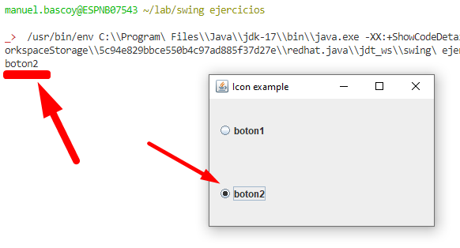

Como crear botones de selección múltiple.
Para crear una serie de botones de selección multiple tenemos que realizar varios pasos:
Los JRadioButton los creamos de la siguiente manra:
JRadioButton button1 = new JRadioButton("boton1");
button1.setActionCommand("boton1");
button1.setSelected(true);
contenedor.add(button1, gridConstraints);Cuando creamos los JRadioButton es importante indicar el setActionCommand ya que es lo que nos permitirá obtener el valor seleccionado del grupo de botones, lo que indiquemos en el setActionCommand será el valor que nos devuelva cuando ese sea el boton seleccionado del ButtonGroup.
De manera optativa podemos indicar el setSelected en solo uno de los botones del grupo para indicar que es el boton que tiene que estár seleccionado por defecto.
Creamos un segundo boton:
JRadioButton button2 = new JRadioButton("boton2");
button2.setActionCommand("boton2");
contenedor.add(button2, gridConstraints);A continuación creamos el ButtonGroup y añadimos los botones:
ButtonGroup group = new ButtonGroup();
group.add(button1);
group.add(button2);Si queremos que se realice una acción al pulsar los botones podemos asignarlos a un ActionListener, en este caso asociaré todos los botones al mismo listener para imprimir por consola el valor del botón seleccionado:
ActionListener radioListener = new ActionListener(){
public void actionPerformed(ActionEvent e){
System.out.println(e.getActionCommand());
}
};
button1.addActionListener(radioListener);
button2.addActionListener(radioListener);Como hemos asociado el mismo listener a los dos botones el ActionEvent contendrá el valor del botón que dispara el evento, por lo tanto e.getActionCommand() será el ActionCommand que hayamos establecido al crear los botones.
Si queremos obtener el valor seleccionado en el ButtonGroup en cualquier momento y no solo al pulsar los botones del propio ButtonGroup podemos hacerlo a traves del objeto del propio ButtonGroup, tal que así:
System.out.println(group.getSelection().getActionCommand());import java.awt.*;
import java.awt.event.*;
import javax.swing.*;
public class RadioButton extends JFrame {
public RadioButton() {
Container contenedor = getContentPane();
contenedor.setLayout(new GridBagLayout());
GridBagConstraints gridConstraints = new GridBagConstraints();
gridConstraints.gridx = 0;
gridConstraints.gridy = 0;
gridConstraints.weightx = 1.0;
gridConstraints.weighty = 1.0;
gridConstraints.fill = gridConstraints.HORIZONTAL;
gridConstraints.insets = new Insets(10, 10, 10, 10);
JRadioButton button1 = new JRadioButton("boton1");
button1.setActionCommand("boton1");
button1.setSelected(true);
contenedor.add(button1, gridConstraints);
gridConstraints.gridx = 0;
gridConstraints.gridy = 1;
gridConstraints.weightx = 1.0;
gridConstraints.weighty = 1.0;
gridConstraints.fill = gridConstraints.HORIZONTAL;
gridConstraints.insets = new Insets(10, 10, 10, 10);
JRadioButton button2 = new JRadioButton("boton2");
button2.setActionCommand("boton2");
contenedor.add(button2, gridConstraints);
ButtonGroup group = new ButtonGroup();
group.add(button1);
group.add(button2);
ActionListener radioListener = new ActionListener(){
public void actionPerformed(ActionEvent e){
System.out.println(e.getActionCommand());
}
};
button1.addActionListener(radioListener);
button2.addActionListener(radioListener);
System.out.println(group.getSelection().getActionCommand());
pack();
setVisible(true);
setResizable(true);
setSize(300, 200);
setTitle("Icon example");
setDefaultCloseOperation(EXIT_ON_CLOSE);
}
public static void main(String[] args) {
new RadioButton();
}
}Tenemos un ButtonGroup con dos JRadioButton, despues tenemos un JButton y un JLabel, el objetivo es que el label muestre cual de los dos botones está seleccionado pero SOLO al pulsar en el boton "Mostrar", al seleccionar cualquiera de los dos botones no se debe de lanzar ninguna accion.
Java | Swing | JRadioButton